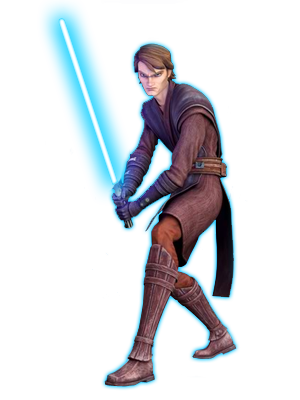
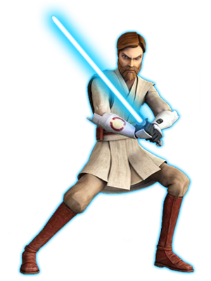
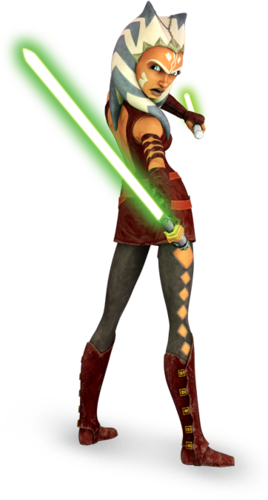
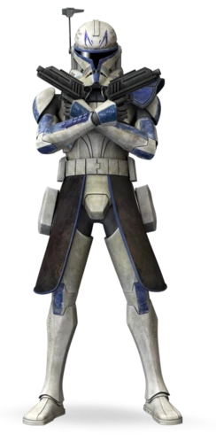
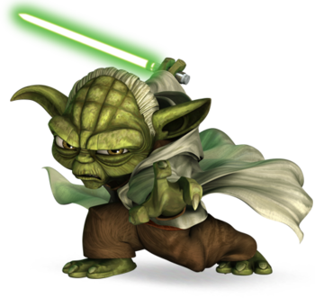

Star Wars: The Clone Wars ist eine US-amerikanische Computeranimationsserie, die im fiktiven Star-Wars-Universum von George Lucas spielt und die Geschehnisse zwischen Star Wars: Episode II – Angriff der Klonkrieger und Star Wars: Episode III – Die Rache der Sith beschreibt. Sie ist inhaltlich verwandt mit der älteren, fast gleichnamigen Zeichentrickserie Star Wars: Clone Wars, und zählt nach der Plot-Revision des Franchise’ durch Disney, im Gegensatz zu Star Wars: Clone Wars, weiterhin zum offiziellen Star-Wars-Kanon.
Am 19. Juli 2018 verkündete Dave Filoni, dass die Serie für eine siebte und letzte Staffel zurückkehren wird. Sie wird aus zwölf Episoden bestehen und auf Disney+ im Februar 2020 starten.
Handlung:
Die Galaxis wird durch den Krieg der Galaktischen Republik mit Separatisten, der sogenannten Konföderation unabhängiger Systeme (KUS), bedroht. Dieser Konflikt wird in allen Teilen der Republik ausgeführt, wobei sich Jedi-Ritter, zusammen mit Klonkriegern, den von Sith gelenkten Droiden stellen. Die Serie erzählt keine durchgängige Geschichte, sondern in sich abgeschlossene Episoden aus dem Leben der kriegführenden Parteien, wobei sich jedoch einige Handlungsstränge über mehrere Episoden ziehen.
Die erste Staffel hatte als Haupthandlung den Krieg und die heroischen Abenteuer der republikanischen Streitkräfte und Jedi-Ritter. Staffel zwei verdunkelte den Ton der Serie und ließ sie durch die Einführung der Kopfgeldjäger, bezahlten Söldnern, welche aber auch hauptsächlich als angeheuerte Kommandeure der separatistischen Droiden dienen, ernster werden. Ahsoka Tanos Entwicklung spielte ebenfalls eine größere Rolle. Die dritte, vierte und die fünfte Staffel wurden im ähnlichen ernsten Ton dargestellt. Die sechste und vorerst letzte Staffel schloss dann die meisten Handlungsstränge ab, ließ ein paar jedoch offen. Die sechste Staffel machte wenige Andeutungen auf den Film Star Wars: Episode III – Die Rache der Sith. Die siebte Staffel nähert sich mehr dem Film an und spielt teilweise während des Filmes.
Click the play button to watch a scene of Star Wars the Clone Wars
Hauptcharacktere:
b

Anakin Skywalker,
war während der Klonkriege ein Jedi-General der Großen Armee der Republik. Während der Schlacht von Christophsis erhielt Anakin seinen eigenen Padawan, Ahsoka Tano. Zusammen mit Ahsoka arbeitete Klonhauptmann Rex mit Anakin als seinem Stellvertreter in der 501. Legion. Er war auch der geheime Ehemann von Senator Padmé Amidala.

Obi Wan Kenobi,
war während der Klonkriege ein Jedi und ein hoher Jedi-General für die Große Armee der Republik. Kenobis Bedeutung für den Krieg war beispiellos, da er ein Schlüsselfaktor für eine große Anzahl der Siege der Republik war. Neben seinen Fähigkeiten im Kampf verfügte Obi-Wan Kenobi auch über außergewöhnliche Fähigkeiten als Diplomat, mit Lösungen, die Kämpfe ohne Kampf beendeten.

Ahsoka Tano,
war ein junger Togruta Jedi Padawan, welcher ein Padawan von Anakin Skywalker war. Ihr Meister nannte sie "Snips". Während der Klonkriege kämpfte sie in unzähligen Schlachten und schloss zahlreiche Freundschaften mit ihren Verbündeten, darunter Kloncaptain Rex, Jedi-General Obi-Wan Kenobi und Senator Padmé Amidala.

Captain Rex,
CT-7567 mit dem Spitznamen Rex war während der Klonkriege Klontruppencaptain. Er arbeitete als kommandierender Offizier sowohl in der Torrent Company als auch in der 501st Legion und verfolgte Anakin Skywalker und Ahsoka Tano bei Missionen und Kämpfen immer genau.

Yoda,
war ein kleines Mitglied einer unbekannten Spezies und Großmeister des Jedi-Ordens während der Klonkriege. Der jahrhundertealte Jedi-Meister residierte hauptsächlich im Tempel von Coruscant und beaufsichtigte die Operationen des Ordens, um die Kriegsanstrengungen der Republik gegen die Separatisten zu koordinieren. Zusätzlich zu diesen Pflichten war bekannt, dass Yoda Truppen auf dem Feld befehligte.